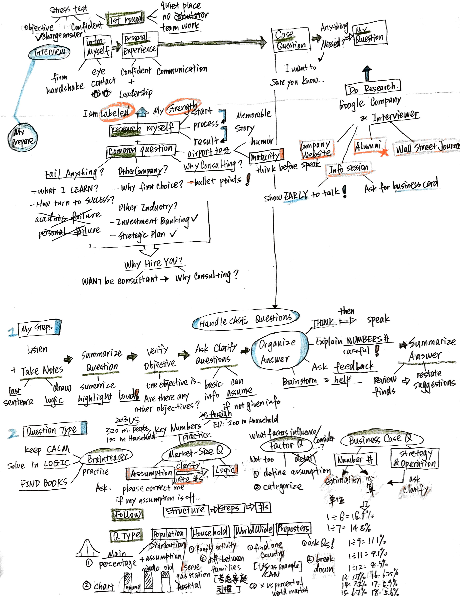
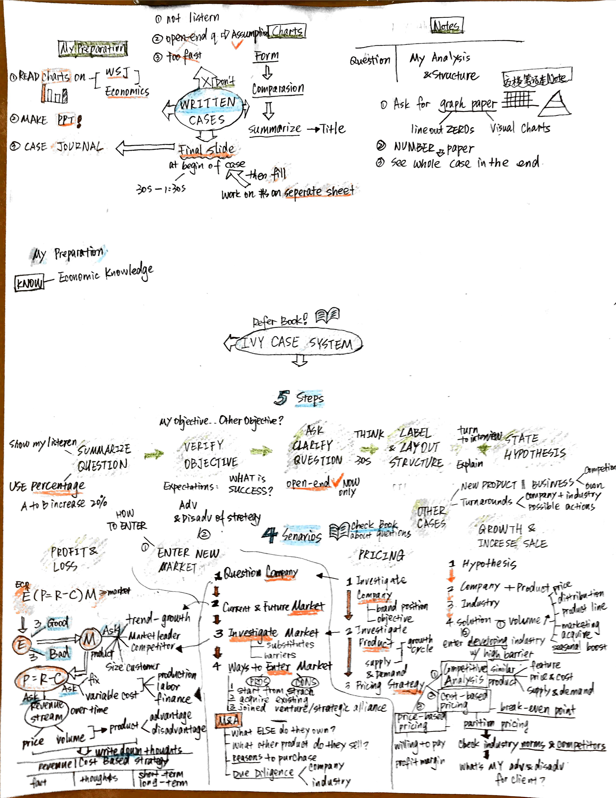
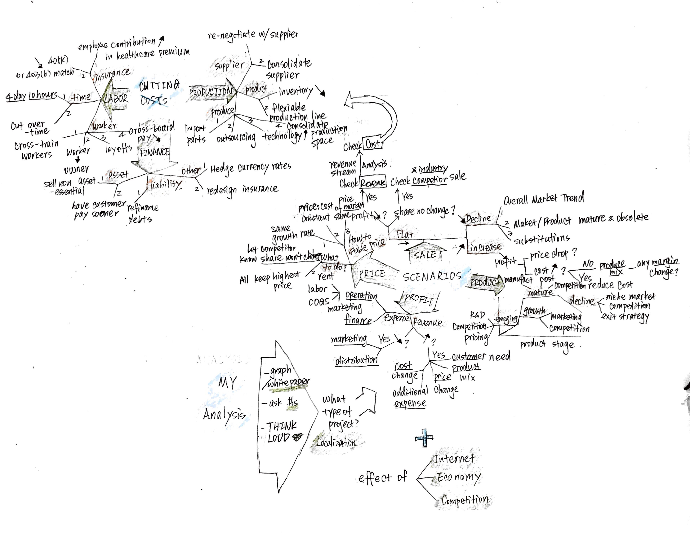
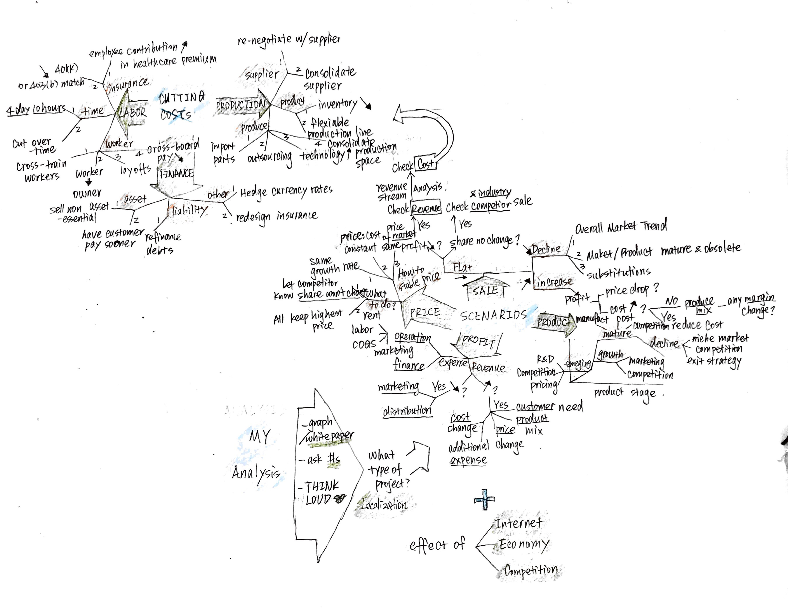
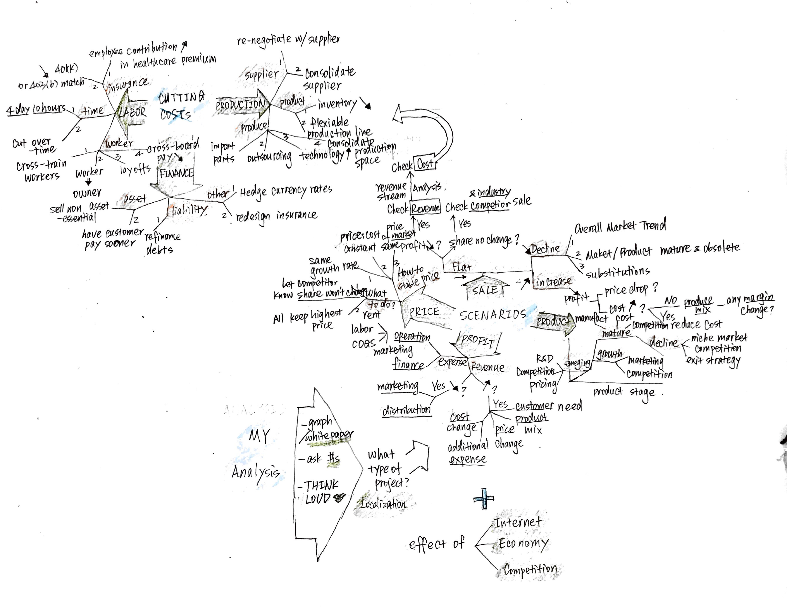

2018-07-17 Pengyin(Wendy) Shan Reading Notes Previous post Next post Reading Map for CASE IN POINT, Chapter 1 to 5, written by Marc P. Cosentino  Tweet Comments Please enable JavaScript to view the comments powered by Disqus. Comments powered by Disqus
 

Comments
Comments powered by Disqus